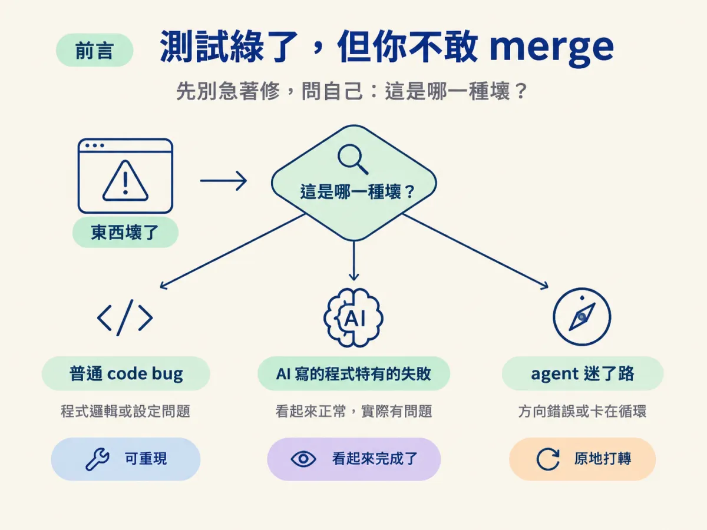
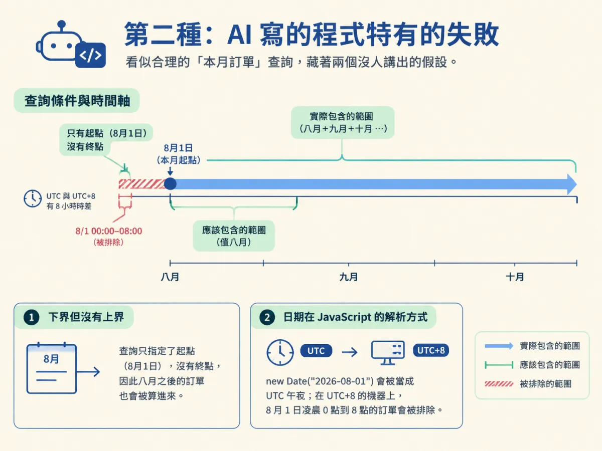
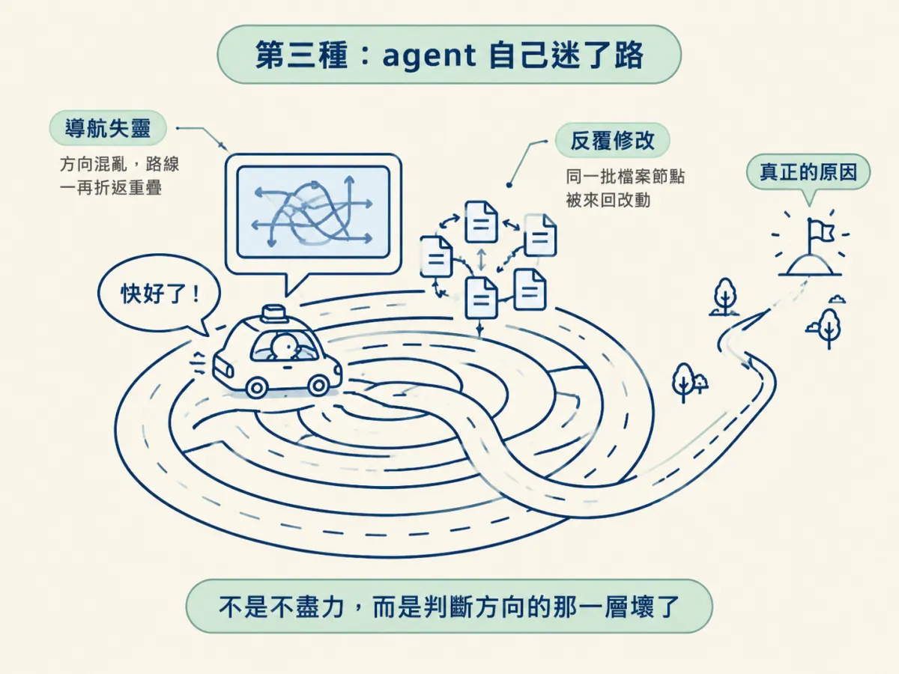
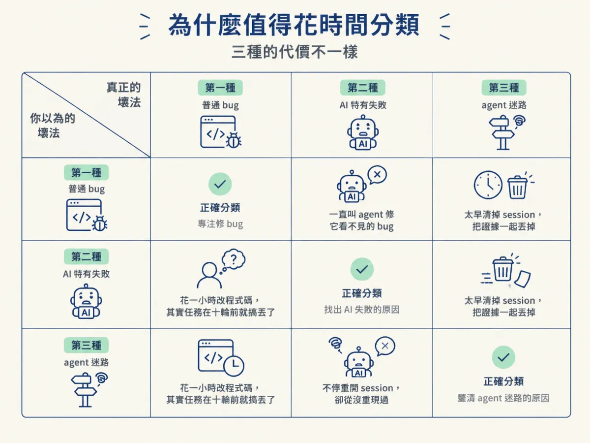

讀完你能說出三種壞法各自長什麼樣、為什麼它們需要不同的回應，並守住那條底線：無法解釋的修好，就是還沒抓到的 bug。
想像一個很普通的週五下午。CI 紅了，你把最後二十行錯誤訊息貼給 agent，說「修好它」。它很有禮貌地回答「已修復」，附上一段說明，diff 動了六個檔案。測試確實變綠了。
你盯著那個 diff，心裡有個聲音：這六個檔案裡，到底哪一個才是真正的原因？如果它下週再壞一次，你手上多了什麼？
多數人卡住的地方不是不會修，而是一開始就跳進修。這一節要把那個動作擋下來，換成另一個問題：這是哪一種壞？ 因為「東西壞了」其實是三種不同的處境，看起來很像，需要的回應卻完全不一樣。分錯類，你會在最不該花時間的地方花掉一整個下午。

最單純的那一種。某個計算回傳錯的結果、某個請求直接爆掉、某個總和差了一。它有幾個很明確的特徵：它是程式裡一個真實的錯，會產生你可以觀察到的行為，而且你可以重現它。
更關鍵的是，它不看你、不看同事、也不看 agent 是誰寫的。同一段邏輯，換人寫、換工具寫，錯法都一樣。所以解法還是那一套，工程師在 AI 出現之前就在用，現在一樣好用：重現、定位、假設、驗證。
這一種就是下一節要展開的主角。這裡先記住它的長相就好：可觀察、可重現、跟作者是誰無關。
第二種不是一個身分標籤，而是幾種特定的失敗模式，它們共同的特徵是：程式碼看起來完成了。
它可能呼叫一個根本不存在的函式；可能寫出一段說服力很強、但悄悄算錯的邏輯；可能在檔案中間自己做了一個真正的決定，卻沒告訴你；可能漏掉一條權限規則、一個邊界情況，或是那種只有餵真實資料才會爆掉的錯。你打開檔案，讀起來條理分明、命名漂亮、註解齊全，於是你就點頭了。然後第一個不尋常的輸入進來，它沒想過的那些東西全部現形。
下面這個例子是示範（不是課程 repo 裡的程式），但它長得很像你會遇到的東西：
// 示範：看起來很合理的「本月訂單」
const start = new Date(`${year}-${month}-01`);
const orders = await db.order.findMany({
where: { createdAt: { gte: start } },
});讀起來沒毛病，對吧？但它有兩個沒人講出來的假設。第一，它只有下界、沒有上界，所以「八月」會把九月、十月之後的訂單一起算進來。第二，new Date("2026-08-01") 這種只有日期的字串，在 JavaScript 裡會被當成 UTC 午夜來解析；如果你在 UTC+8 的機器上跑，八月一日凌晨零點到早上八點的訂單會被排除在「八月」之外。

為什麼這種錯特別難查？因為你在月中拿幾筆當月資料測，它會完全正確。錯誤只在你剛好跨到邊界、或剛好有一筆凌晨訂單的時候出現。它通過了 happy path，而 happy path 正是作者唯一想過的路徑。
這一種還有一個更麻煩的地方：你沒辦法從作者的意圖去推理，因為你不是作者。 就算你全程看著它被寫出來，你其實也不知道每一行為什麼會在那裡。一般 bug 你可以靠重現和定位把因果釘死；這一種你得先回頭重建「它當初到底決定了什麼」，才知道那算不算 bug。
第三種根本不是程式的問題。程式可能沒錯，錯的是正在處理問題的那個過程。
它的樣子很好認：同一個動作一直重複，同一批檔案來回改，改過去又改回來，每一次嘗試都讓專案比上一次稍微糟一點。而它全程都非常有自信，一邊離真正的原因越來越遠，一邊告訴你「快好了」。
這時候你叫它「把問題修好」，不會有幫助。原因很直接：你叫來解決失敗的那個東西，現在本身就是失敗的一部分。 這就像一台導航失靈的車，你對著它喊「快點到目的地」，它只會更努力地照著錯的路走。它不是不盡力，是它判斷方向的那一層已經壞了。

要注意這個類比只對到一個地方：agent 還是聽得懂你的指令，它壞掉的是「判斷自己在哪裡、下一步該做什麼」。所以有效的動作不是叫它更用力，而是把它拉回一個乾淨的狀態，同時把它先前已經收集到的證據帶走。至於什麼時候該拉、什麼時候該先讓它跑完，下一節會給你判準。
這裡有一個幾乎每個人都會踩的邊界：第二種不是「AI 寫的程式裡的所有 bug」。agent 寫的程式照樣可能出現變數打錯、迴圈邊界差一、條件寫反這種普通的錯。那些錯誤跟作者是誰無關，用第一種的方法處理就好，你不需要先重建任何意圖。
真正的分界線在錯誤的來源。問自己一句：它是考慮過這個地方，只是寫錯了；還是它根本沒想過這個情境？ 前者是普通 bug，因為你可以指著那一行說「這裡寫錯了」。後者是第二種，因為那裡根本沒有一行可以指。它缺的是一個它沒做的決定。這一條界線決定你要不要花時間重建意圖，也決定你的修法會是一行，還是一段需要先想清楚的設計。
三種也可以同時存在。一個迷路的 agent 會一邊原地打轉，一邊把新的 bug 寫進專案；一個 AI 寫的邊界錯誤，也可能剛好出現在一段它自己改到亂掉的程式裡。所以分流不是貼一次標籤就結束，而是每次它又改了一輪、每次錯誤又換了長相，你都可以重問一次「現在這是哪一種」。
你可能會想：知道是哪一種又怎樣，反正都要修。問題就在這裡。選錯的代價，三種都不一樣，而且都很貴。
如果你把第二種當成第一種，你會一直叫 agent 去修一個它真的看不見的 bug，而正確的做法其實是你自己停下來，把它重現出來。如果你把第三種當成第二種，你會在 session 已經混亂的時候太早清掉它，把它先前辛苦收集到的證據一起丟掉。如果你把第三種當成第一種，你會花一個小時改程式碼，而真正的問題是它在十個 turn 之前就已經搞丟了任務。

反過來也一樣。把第一種當成第三種，你會不停重開 session，卻從來沒有真的把它重現過一次。三種都貴，但貴在不同地方，所以先花三十秒分類，通常是最划算的投資。
不管最後是哪一種，底下都壓著同一條規則：
無法解釋的修好，就是還沒抓到的 bug。
把它拆開來看：如果錯誤消失了，而你說不出它為什麼會發生，那你就沒有證明原因已經被移除。你可能只是把症狀藏起來、把它搬到別的地方，或是把程式改成暫時碰不到它。這三件事都會讓測試變綠，也都不會讓 bug 消失。
所以判斷的順序要反過來：先要證據，再談直覺。bug 要靠證明，不是靠把訊息消音。這也是為什麼這一整套方法最後都收在同一件事上：你能不能用自己的話，說出「它為什麼壞、我改了什麼、為什麼這樣就對了」。
東西壞掉時，第一個動作不是修，是分類。第一種是普通的 code bug：可觀察、可重現、跟誰寫的無關，用科學方法處理。第二種是 AI 寫的程式特有的失敗：呼叫不存在的函式、看似正確卻悄悄算錯、自己做了決定、漏掉邊界，共同點是「看起來完成了」，而你無法從一個不屬於你的意圖去推理。第三種是 agent 迷了路：原地打轉、來回改檔、越改越糟卻依然自信，此時叫它修沒有用，因為它自己就是故障的一部分。三種都要付出代價，所以值得先花三十秒分類。而在三者底下，只有一條規則不會變：無法解釋的修好，就是還沒抓到的 bug。
知道有三種之後，下一個問題是實務上的：你手上這個狀況，到底是哪一種？下一節會給你一組可以依序問出口的判別問句，以及每一種選錯之後會發生什麼事。